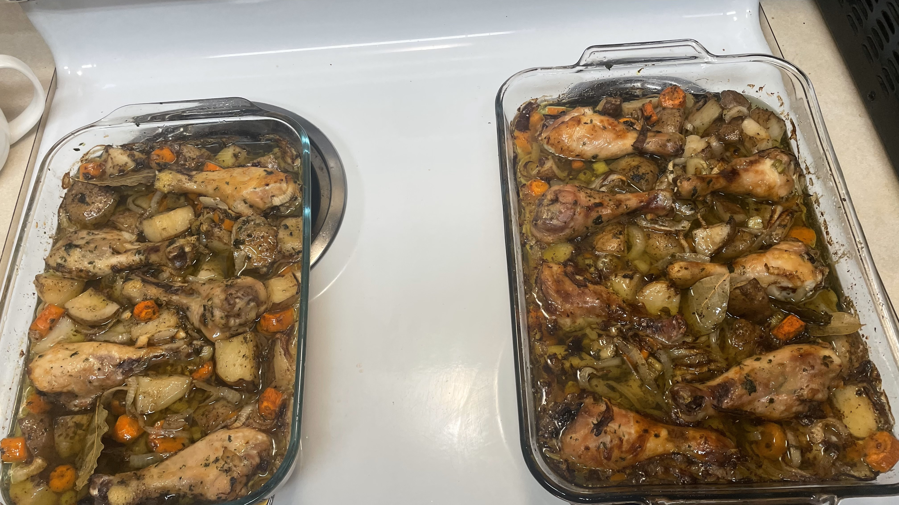

Aunt Laura's Chicken

Description
This dish was first created by Aunt Laura as a
way to cook food for the family while being able
to do work around the house while it cooked.
Since its creation, the dish has been a hit with
the family and is a favorite meal. The recipe
calls for drumsticks, although chicken brest/thigh
may be used if preferred.
Ingredients:
- 8 Chicken Drumsticks
- 3 Large Onions
- 3 Celery Stalks
- 6 Large Russet Potatoes
- 6 Carrots
- 4 Cloves of Garlic
- 2 tsp Salt
- 2 tsp Pepper
- 1/2 cup Parsley
- 3 Bay Leaves
- Vermouth
Steps:
- Rinse chicken
- Coat glass cooking pan with oil
- Slice onion, celery, carrots, potatoes
- Combine chicken, onion, celery, garlic, salt, pepper,
parsley, bay leaves, carrots, & potatoes
- Bake @ 250 degrees Fahrenheit for roughly 3 hours covered with aluminum foil
- Uncover, add entire bottle of Vermouth, flip chicken, and continue baking for 2 hours